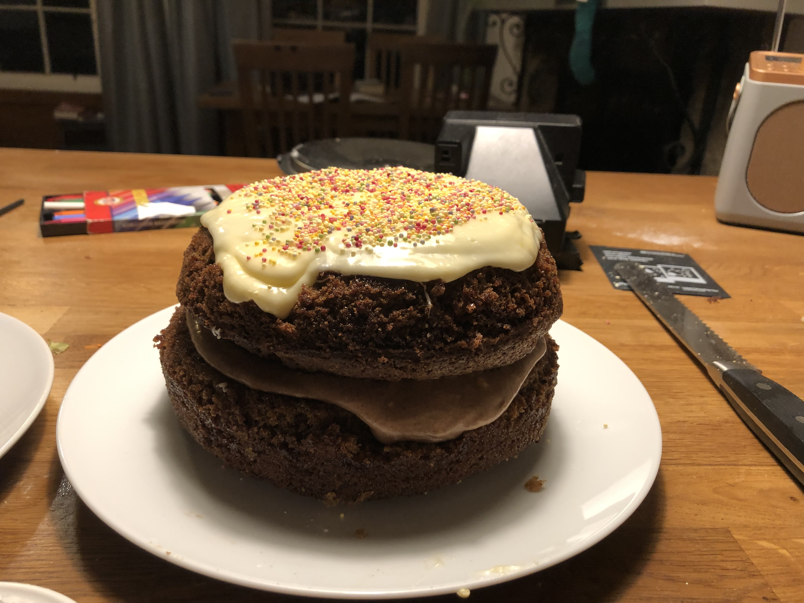

Carrot Cake recipe

Ingredients for cake
- 4 eggs
- 1.25 cups olive oil
- 2 cups white sugar
- 2 teaspoons vanilla extract
- 2cups flour
- 4 teaspoons baking powder
- your heart's fill of cinnamon
- 1/2 teaspoon salt
- 3 cups grated carrots
Ingredients for frosting
- 1/2 cup softened butter
- 225g cream cheese
- 4 cups powdered sugar
- 1 tsp vanilla extract
Method:
- Preheat oven to 175C.
- Beat together eggs, olive oil, white sugar and vanilla extract.
- Add flour, baking powder, salt and cinnamon.
- Stir in grated carrots.
- Bake for 40 minutes.
- Prepare frosting by mixing all ingredients.
- Frost when cooled. Decorate with fruit.